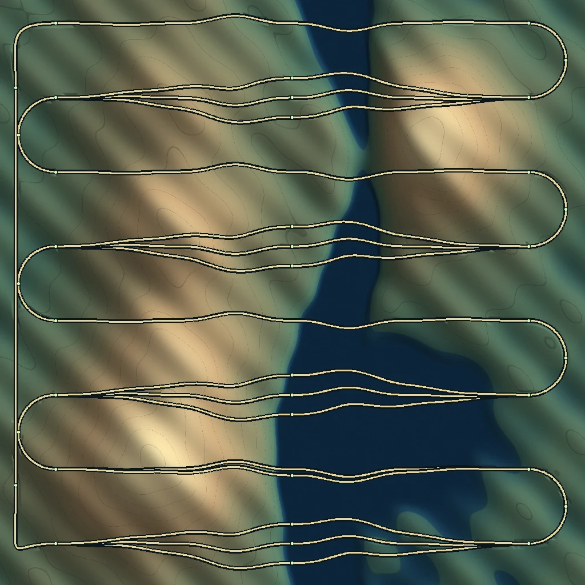

World and editor development
Assault Knights
Explore Aurora Canyon’s authored terrain, branching roads and elevation changes. The same route design can be examined as a plan, a terrain surface and a conversion candidate.
Aurora Canyon authored terrain and roadway network, drawn from its heightfield and spline samples.
Aurora Canyon
The authored canyon covers a 10 km square. The connected road graph contains 38 junction and route nodes, 47 edges and 10 independent cycles. Maximum measured road grade is 8.6% in this source revision.
Four fork families split into three lanes and then merge. Their separate elevations let the designer build bridges and crossings within the same route network.
The plan shows the authored network. The conversion adds its own review extensions and keeps the original positions inside the 10 km core.
What transferred to Q26
| Check | Result |
|---|---|
| Authored dimensions | The 10 km core is preserved at native metric scale. A 14.2 km guard envelope in the conversion handles Q26’s terrain boundary falloff. |
| Terrain samples | 8,321 height queries passed in a structural comparison across 16 native terrain tiles. |
| Roadway review | Editable route information and review geometry preserve the original route coordinates. Complete vehicle collision, terrain holes and tunnel gameplay remain open for this conversion. |